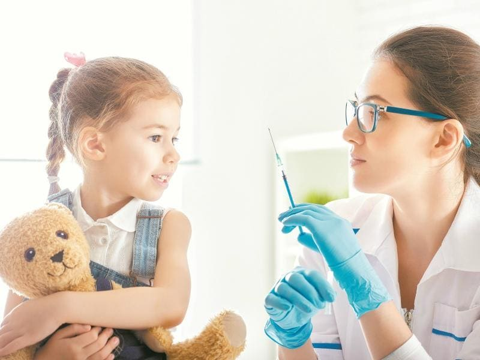
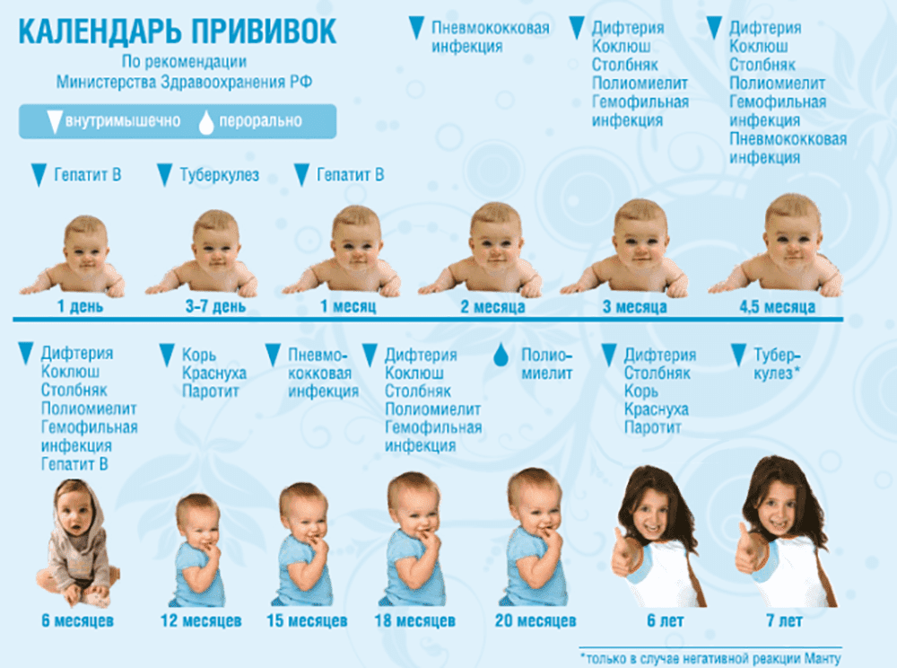

Все мы, люди, слеплены из одного теста. Все мы склонны недооценивать риск бездействия, полагаться на авось, все мы ленивы. Может, кому-то кажется, что педиатры (которые столько знают о прививках и остальной профилактике, которые столько видят страшных последствий от вовремя не проведенных профилактических мер, типа вакцинации, введения витамина D, добавок железа, адекватного вскармливания, своевременных скринингов и т. д.) не такие, но это не так. Слышали поговорку «Нету хуже сволочей, чем больные из врачей»? Ее не просто так придумали.

ОЧЕВИДНЫЕ И НЕОЧЕВИДНЫЕ ФАКТЫ О ВАКЦИНАЦИИ
Летом 2017-го я чуть не угробил свою любимую собаку, белого лабрадора. Этот текст был написан, когда он уже уверенно пошел на поправку.
…Я всегда вовремя проводил профилактику укусов клещей, наносил капли на холку раз в месяц, иногда давал внутрь таблетку от клещей, надевал на него ошейник с пропиткой при походе в лес. Прошлое лето было особенно богато клещами, пес светлый, и на нем хорошо видно клещей – я видел, как препараты убивали клещей прямо в шерсти, до того как они вопьются, снимал с него по 6 штук за прогулку, то «пьяных», то уже мертвых. Но в этом году клещей заметно меньше, я перестал их видеть на собаке и расслабился. В мае еще капал капли и надевал ошейник, а как наступило лето, перестал. Всё недосуг – надо за препаратами в ветклинику ехать, капать, помнить, а клещей-то вроде и нет. Как-нибудь потом.
И вот однажды я снял с живота и подмышек собаки трех клещей за день, немного напившихся. «Досадно», – подумал я и решил купить капли. Через два дня пес заметно погрустнел и перестал есть, еще через день еле таскал ноги по квартире и тяжело дышал. Раньше с ним уже бывали легкие болезни, погрустит-поголодает денек и все проходит, я сперва не волновался. Но когда он не поел на третий вечер подряд, меня осенило: клещи + вялость + отказ от еды – это же пироплазмоз, страшная собачья болезнь, способная убить животное за считаные дни (а иногда и часы). Типичным для нее является красная моча (с кровью), я вывел собаку на улицу – так и есть. Вот тут я уже забил тревогу.
Слава коллегам-ветеринарам, быстро взяли анализы (подтвердили диагноз), ввели лекарства, поставили катетер, провели внутривенное вливание в первый раз, дальше я капал в катетер дома сам. Еще три дня пес не ел, потом стал соглашаться на вкусненькое из моих рук, а сегодня впервые съел полный объем своей привычной пищи, из миски.
Кажется, кризис миновал. Теперь еще, правда, нужно следить за осложнениями болезни: иногда пироплазмоз приводит к почечной недостаточности, а иногда даже дает рецидивы (уже без укусов клеща).
Я посчитал, сколько денег я потратил на лечение и анализы – вышло в два раза больше, чем ушло бы на профилактику. Не говоря уже о вреде здоровью собаки, моих нервах и слезах моих детей: «Папа, а вдруг он умрет?» Так что я на своей шкуре почувствовал, насколько профилактика лучше и дешевле, чем устранение последствий. Думаю, я надолго усвою этот тяжелый урок.
Не повторяйте моих ошибок. Вовремя вакцинируйте детей и питомцев, предупреждайте болезни заранее, чтобы потом не кусать локти, как я.
